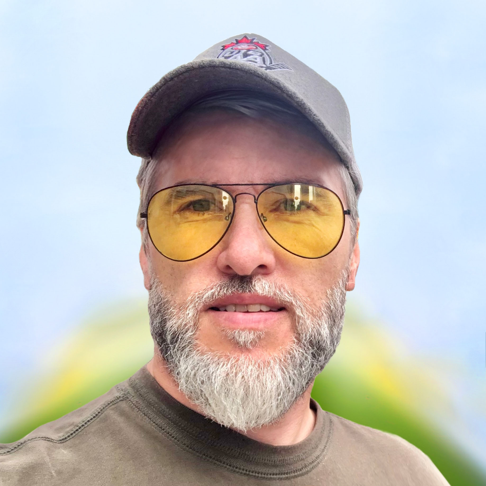

ORLINSKY
ceramic studio
Our Story
This studio exists to give that universe a form you can hold — to preserve the quiet moments that make a life extraordinary.

The Maker
Founder & Master Ceramicist
I came to ceramics through a belief, not a technique. The belief that objects can hold silence — that a piece of clay shaped by hand can carry more than its weight.
When someone brings one of these works into their home, they aren't decorating a wall. They're placing a memory somewhere it can breathe — somewhere it will find them again, years from now, in quiet moments.
— OrlinskyObject + Memory + Silence = Art
Every work begins here. Not with a sketch or a glaze, but with a question: what feeling does this need to carry? The simplest compositions hold the most — they leave space for your own memories to enter.
The Material & The Time
In each work, we press the branches of ancient trees — some over five centuries old — directly into the wet clay. Their imprint becomes part of the surface, permanent and unrepeatable. The tree witnessed centuries of seasons, entire generations of lives.
Now its trace lives in your home. I find something deeply moving in this: that two timelines — the tree's and yours — meet inside a single object. Your childhood memories connecting with the memory of the tree. Your happiness holding onto something that outlasted empires.
The client touches not the branches. They touch time itself.

What we believe
01
A single brushstroke. A small bloom. Silence on the surface. The simplicity is intentional — it gives your own memories space to enter and complete the work.
02
We don't announce ourselves loudly. Depth speaks in a lower register. Each piece earns its presence slowly, the way all honest things do — through feeling, not volume.
03
You're not buying a painting for your wall. You're placing an anchor — something that, years from now, will return you to when happiness was simple and the world felt warm.
If something in this resonates — a feeling, a memory, a quiet moment from your own life — I would love to hear it. Every bespoke piece begins with a story. Yours.
Begin a conversation